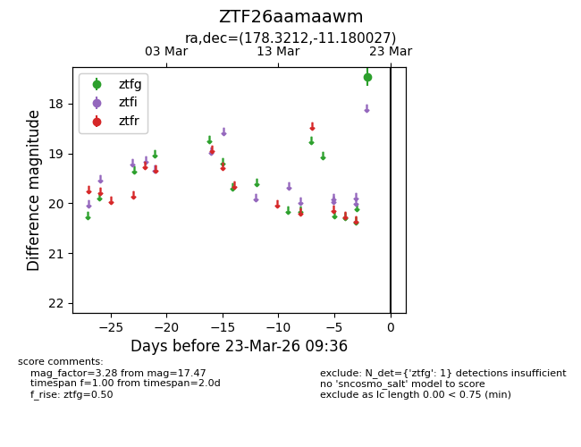
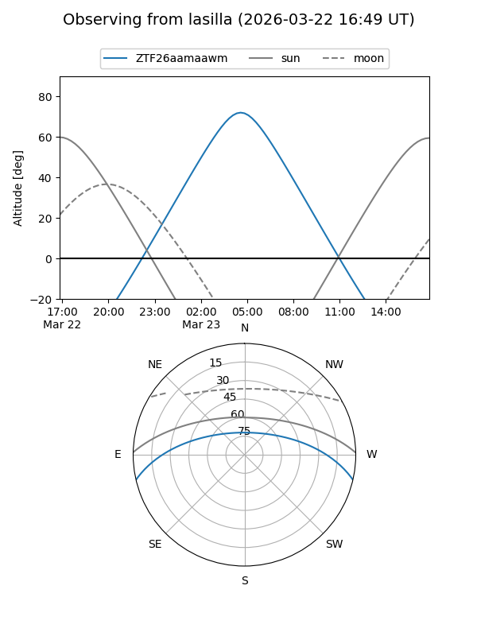
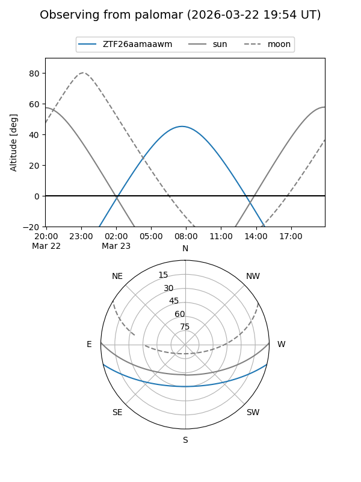

ZTF26aamaawm
Target ZTF26aamaawm at 2026-03-23 09:38
Aliases and brokers:
FINK: link
Lasair: link
ALeRCE: link
alt names
ZTF26aamaawm (ztf,fink_ztf)
Coordinates:
equatorial (ra, dec) = 178.3212,-11.18003
equatorial (HMS+DMS) = 11:53:17.10,-11:10:48.10
galactic (l, b) = (280.8022,+49.17681)
Flags:
Photometry:
last ztfg=17.47
1 ztfg detections
Lightcurve

Visibility


Additional plots